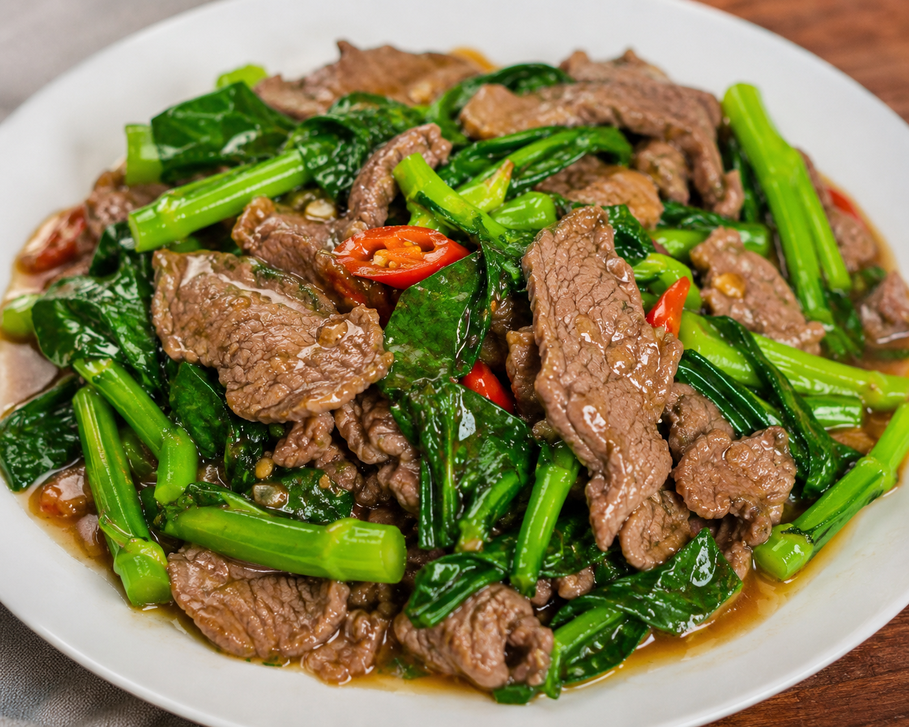
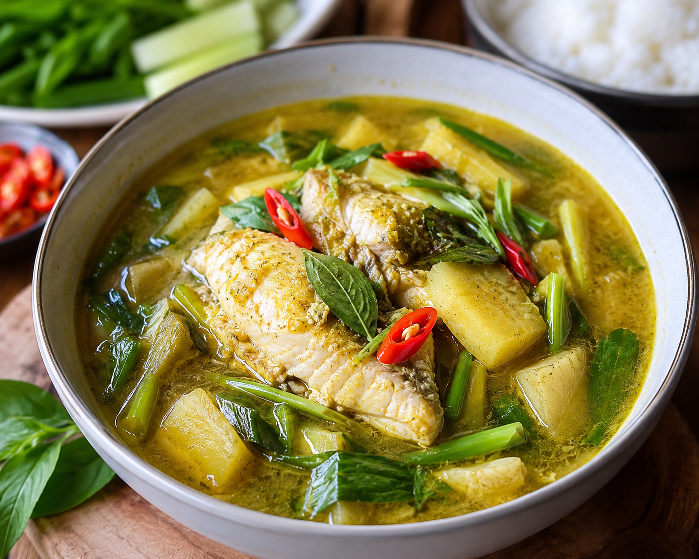

Food khmer ˖᯽ ݁˖
មុខម្ហូបខ្មែរ
Our Menu
រសជាតិពិត បន្តពីប្រពៃណីខ្មែរ
ធ្វើពីគ្រឿងផ្សំ ស្រស់ៗ និងមានគុណភាព

អាម៉ុកត្រី គឺជាម្ហូបដែលយកត្រីស្រស់មកលាយជាមួយគ្រឿងការីខ្មែរ ទឹកដោះគោដូង ស្លឹកក្រូចសើច និងគ្រឿងទេសផ្សេងៗ ហើយចំហុយក្នុងស្លឹកចេក។

ឡុកឡាក់ (Lok Lak) គឺជាម្ហូបខ្មែរដ៏ពេញនិយមមួយ ដែលធ្វើពីសាច់គោ (ឬពេលខ្លះសាច់មាន់) ដាក់គ្រឿងជ្រលក់ រួចឆាឱ្យឆ្អិន ហើយបម្រើជាមួយសាឡាត់ ប៉េងប៉ោះ ត្រសក់ ខ្ទឹមបារាំង និងបាយស។

គឺជាម្ហូបស៊ុបប្រពៃណីខ្មែរដ៏ល្បីល្បាញមួយ ដែលត្រូវបានគេចាត់ទុកថាជា «ស៊ុបជាតិខ្មែរ» ព្រោះវាមានប្រវត្តិយូរអង្វែង និងប្រើគ្រឿងផ្សំសម្បូរបែប។

គឺជាម្ហូបប្រពៃណីខ្មែរដ៏ពេញនិយមមួយ ដែលគេតែងតែញ៉ាំជាអាហារពេលព្រឹក។

បាយឆាពងមាន់ គឺជាម្ហូបដែលធ្វើពីបាយឆាជាមួយពងមាន់ ស៊ុត ខ្ទឹមស និងបន្លែស្រស់ៗ ដោយបន្ថែមទឹកស៊ីអ៊ីវ ឬគ្រឿងទេសផ្សេងៗ ដើម្បីឱ្យមានរសជាតិឈ្ងុយឆ្ងាញ់។

មីឆា គឺជាម្ហូបដែលធ្វើពីមីឆាជាមួយសាច់មាន់ សាច់គោ សាច់ជ្រូក ឬអាហារសមុទ្រ ព្រមទាំងបន្លែស្រស់ៗ ដូចជា ការ៉ុត ស្ពៃក្តោប និងខ្ទឹមបារាំង។ ម្ហូបនេះត្រូវបានឆាជាមួយទឹកស៊ីអ៊ីវ និងគ្រឿងទេសផ្សេងៗ ដើម្បីឱ្យមានរសជាតិឈ្ងុយឆ្ងាញ់។

ជាមុខម្ហូបឆាមួយ ដែលប្រើសាច់គោ និងបន្លែខាត់ណា (Chinese broccoli) ឆាជាមួយទឹកស៊ីអ៊ីវ ខ្ទឹម និងគ្រឿងទេសផ្សេងៗ។ វាមានរសជាតិប្រៃៗផ្អែមៗ និងពេញនិយមក្នុងភោជនីយដ្ឋានខ្មែរ និងចិន។

ម្ជូរគ្រឿង គឺជាសម្លម្ជូរបែបខ្មែរ ដែលមានរសជាតិ ជូរៗ និងក្លិនឆ្ងាញ់ពីគ្រឿងផ្សំខ្មែរ។

បាយសាច់ជ្រូកអាំង គឺជាម្ហូបខ្មែរដែលមាន បាយសឬបាយចំហុយ និង សាច់ជ្រូកអាំង (grilled pork) ដែលត្រូវបានចម្អិនឲ្យមានរសជាតិឆ្ងាញ់
With ជ្រក់ត្រសក់ ឬបន្លែជ្រក់

គឺជាម្ហូបខ្មែរមួយប្រភេទដែលស្រដៀងនឹងសម្ល/ស៊ុប ប៉ុន្តែវាមានលក្ខណៈ ស្រាល និងមិនខ្លាំងក្លិនដូចប្រហុក ទេ។